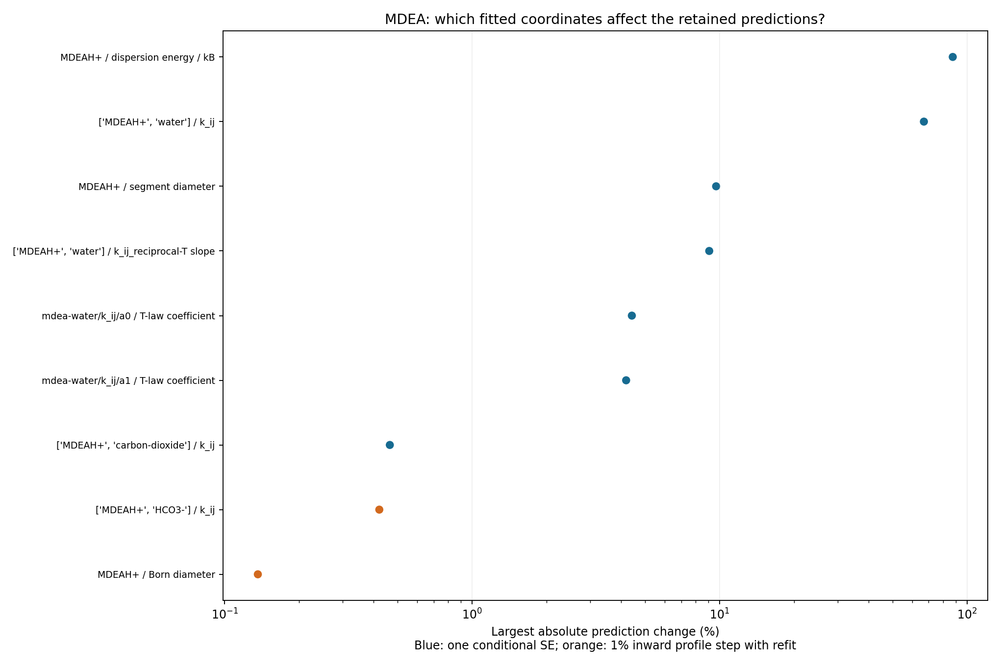
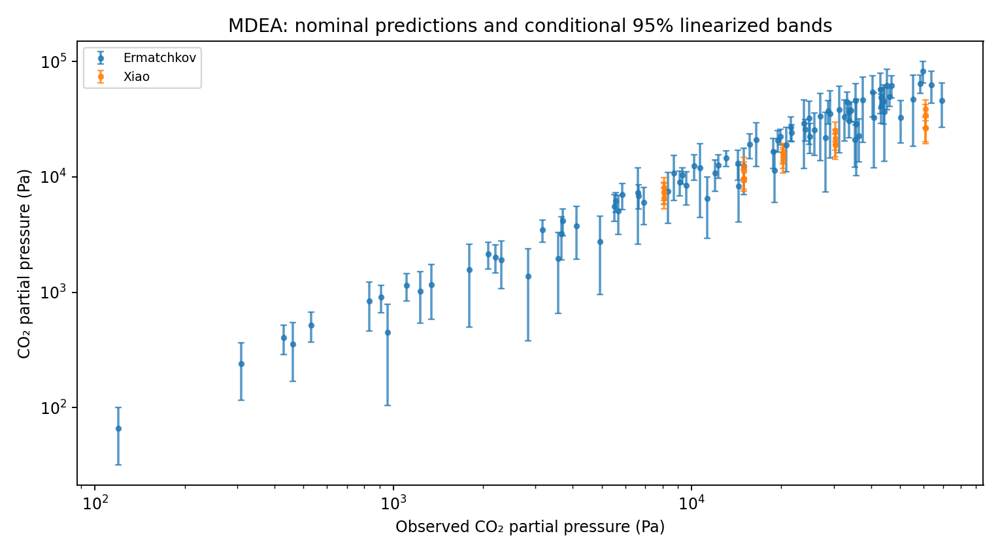

MDEA specification reproduction
Current B1 (#302)
B1.toml now binds the selected #298 endpoint and the unchanged adopted #255 shared values and R2 law. prepare.py materializes its declaration and excludes Kuranov rows 28 and 72. agent-heavy env PYTHONPATH=src .venv/bin/python analyses/solvent_specification_mdea/run.py performs fixed replay and comparisons without fitting. Verification gives 278 rows, cost 374.5190788052401, relative cost difference 2.7600e-13 and zero prediction difference. Pressure assessment gives Xiao 28.1910414167% and Ermatchkov 18.2705616155% AARD.
The MDEA workflow disposition records the post-hoc owner gate amendment and all limits: two active bounds (+1 protonated-MDEA–bicarbonate interaction and 7 Å Born diameter), conditional parameter uncertainty in #307 below, no F4 evidence at 394.94–395.00 K, the two Kuranov and seven corrected-Kamps domain exclusions, and unavailable 333.15 K / 60 wt% B1 heat. A3 is unchanged and unrefit; it is historical and transfer-penalty evidence. No absorber-use qualification or new physical validation follows.
Parameter uncertainty and sensitivity (#307)
Pressure bands cover 108 retained states at 298.15–393.15 K. Their conditional relative standard errors range from 7.82% to 39.1%. Covariance propagation includes parameter correlations; the marginal one-SE perturbations used for ranking do not. Large local fractional changes are derivatives multiplied by SE, not nonlinear perturbed predictions.
The 278-row adopted record is unchanged. Covariance and bands are local, linearized and conditional on the fixed model, observation weights, source inputs and bound coordinates. They describe parameter uncertainty under an unknown common residual variance, not model discrepancy, future measurement noise or physical validation. The native variance factor is 2.7639784.
The interior-only diagnostic refit changes cost by -1.86958e-10; the largest absolute movement in units of coordinate scale is 0. Ranking uses native conditional covariance; bound coordinates fixed. Both covariance estimates, the native correlation matrix and all movements are retained.
The ranking statistic is the maximum absolute fractional prediction change over each named retained group. Interior coordinates move by one conditional standard error with the others fixed. Bound coordinates use the first inward profile point (1% of the original bound interval), with all remaining coordinates refitted. These are different perturbation sizes; their ranks do not establish statistical significance. Near-zero predictions can dominate relative changes.
| Parameter | Adopted value (physical unit) | SE (bound coordinates fixed) or profile | Largest fractional change | Most affected predictions |
|---|---|---|---|---|
| protonated-methyldiethanolamine / dispersion_energy_over_k | 623.043 kelvin | ± 36.69 (bound fixed) | 0.8759 | Ermatchkov; Xiao; Carson |
| [‘protonated-methyldiethanolamine’, ‘water’] / k_ij | -0.03323621 dimensionless | ± 0.00999 (bound fixed) | 0.6696 | Ermatchkov; Xiao; Carson |
| protonated-methyldiethanolamine / segment_diameter | 3.649407 angstrom | ± 0.03061 (bound fixed) | 0.09683 | Ermatchkov; Xiao; Carson |
| [‘protonated-methyldiethanolamine’, ‘water’] / k_ij_reciprocal_temperature_slope | -27.10493 kelvin | ± 3.363 (bound fixed) | 0.09082 | Ermatchkov; Carson; Xiao |
| pair/mdea-water/k_ij/a0 / temperature_law_coefficient | -0.2063373 dimensionless | ± 0.001341 (bound fixed) | 0.0442 | Ermatchkov; Xiao; Carson |
| pair/mdea-water/k_ij/a1 / temperature_law_coefficient | 0.00147504 1 / kelvin | ± 2.563e-05 (bound fixed) | 0.04191 | Ermatchkov; Carson; Xiao |
| [‘protonated-methyldiethanolamine’, ‘carbon-dioxide’] / k_ij | 0.2481889 dimensionless | ± 0.02934 (bound fixed) | 0.004648 | Ermatchkov; Xiao; Carson |
| [‘protonated-methyldiethanolamine’, ‘bicarbonate-anion’] / k_ij | 1 dimensionless | 0.98: Δcost 0.142 (converged); 0.9: Δcost 0.7282 (converged); 0.8: Δcost 1.508 (converged) | 0.004214 | Ermatchkov; Xiao; Carson |
| protonated-methyldiethanolamine / born_diameter | 7 angstrom | 6.95: Δcost 0.06927 (converged); 6.75: Δcost 0.3571 (converged); 6.5: Δcost 0.7433 (converged) | 0.001361 | Ermatchkov; Xiao; Carson |


The two weakest directions of the complete weighted Jacobian in the original optimizer scales are:
- Singular value 0.00848001: [‘protonated-methyldiethanolamine’, ‘bicarbonate-anion’] / k_ij (+0.8068); protonated-methyldiethanolamine / born_diameter (-0.5440); protonated-methyldiethanolamine / dispersion_energy_over_k (+0.2099); [‘protonated-methyldiethanolamine’, ‘water’] / k_ij (+0.0943).
- Singular value 0.0198683: protonated-methyldiethanolamine / born_diameter (-0.8386); [‘protonated-methyldiethanolamine’, ‘bicarbonate-anion’] / k_ij (-0.5325); protonated-methyldiethanolamine / dispersion_energy_over_k (-0.1046); [‘protonated-methyldiethanolamine’, ‘water’] / k_ij (-0.0478).
These directions include bound coordinates; their two-sided singular-vector displacements are not necessarily feasible. They describe local confounding in the declared scales, not a unique physical mechanism.
Each bound scan fixes the coordinate at 1%, 5% and 10% of its original interval inward from the adopted bound, independently starting the other coordinates at the adopted point. Native fits have at most 40 iterations and 2100 seconds per point, using the existing stopping tolerances. Returned cost changes and terminations are reported without new fit-quality thresholds. The bound endpoint is the adopted constrained fit. The limited inward grid does not locate a confidence limit or a global optimum. Profiles do not requalify phase stability or change the adopted record.
Profile results, prediction values and exact native columns, bands, ranked values and input identity retain the calculation. MEA ranks only pressure, heat, heat capacity, carbamate/bicarbonate and density at states already in its adopted specification. Bicarbonate is additionally resolved alone at the four states with bicarbonate+carbonate observations; this extra model quantity is not a new measured observation or a fitted target. The summed observable is retained separately; MDEA uses the 20 Xiao and 88 Ermatchkov pressure states at ≤49 wt% from #298, its adopted R2 law, and the 40 Carson heat states. Parameter units and ties are in the coordinate declarations; reaction enthalpy shifts are shown as adopted totals in J/mol, whereas refit increments are about zero.
Engine commit 391dfe5d64ede5036bf160bc6ae037ad5e14af32, wheel SHA-256 0962e21d2fa7a8ba1ed4622f1110b3e8053bacd878fa41c999d85e8b9afab66b. Run from the repository root using agent-heavy env PYTHONPATH=src uv run --no-sync python analyses/mea_parameter_bundle/scripts/uncertainty_307.py MDEA. The source base is 79706636e8716974e045b582f1b1cbfe7e4c7009; the approved ceiling is 400 gross added executable lines. No manuscript promotion is claimed. Independent delivered review is pending.
Historical specification reproduction
The remainder records earlier wheels and endpoints. B1-historical.toml preserves their old B1 binding; the old R2 fit and R4 execution commands below are historical, superseded by the fixed replay above. Their retained outputs are not relabeled as the current record.
The specification-driven calculations reproduce the retained B1 and A3 endpoints and the declared B1 phase-state subset in issue #228. These are numerical reproduction checks against the #222 calculations. They establish neither new physical validation nor qualification for absorber use. Delivered evidence awaits independent review and investigator promotion.
The shared TOML declarations own species supports, reactions and their temperature-domain amendment, the neutral reference, seven named problem templates, observation constructors, row column maps, roles, residual scales and weights. B1 and A3 bind parameter, coordinate and caloric records by SHA-256. The driver expands prepared CSV rows at execution time. Preparation performs fixed source transformations; it defines no chemistry or observation constructor and imports no historical script. The generated per-row problem document was removed.
| Check | Actual | Reference and acceptance | Disposition |
|---|---|---|---|
| R1: B1 endpoint | Cost 374.4520134237422; relative cost error 6.199485369506874e-13; largest ordered weighted-residual difference 4.546019116702382e-11 across 280 rows | Cost 374.45201342397434, relative error ≤1e-8; every residual absolute difference ≤1e-8 | Pass |
| R2: B1 refit | Cost 374.45201342397434; maximum optimizer-coordinate difference 0; 23 iterations, usable converged termination | Relative cost error ≤1e-6; all nine coordinate differences ≤1e-5; converged termination | Pass |
| R3: Ermatchkov | 88 rows, CO₂ partial-pressure mean absolute relative deviation 19.1460124028601% | 19.1460124028601%, difference ≤1e-6 percentage points | Pass |
| R4: B1 phase states | 751 matching identities; 0 dense splits; same 37 gas-evolution identities; 0 ambiguous, unresolved or reconstruction cases | Exact counts and identities | Pass |
| R5: A3 endpoint | Cost 403.7149851474161; nine coordinate declarations match, including tied diameters and A bounds | Cost 403.71498514705206, relative error ≤1e-8 | Pass |
The 280 fitted observations retain eight groups: 69 Kuranov, 16 Jakobsen, 40 Carson, four Merkley, 33 heat capacities, 33 loaded densities, 24 unloaded densities and 61 Kim pressures. Their order, source rows, fixed transformations and residual definitions remain explicit. R1 and R5 use the retained endpoints. R2 uses the retained B1 start with the declared zero MDEAH⁺–water reciprocal-temperature slope, original coordinate origins, scales, bounds and target ties. The controls remain 40 maximum iterations, 2100 s maximum elapsed time, function and parameter tolerances 1e-10, and gradient tolerance 1e-8. The native termination is function tolerance reached: relative cost change 3.932338e-12 ≤1e-10. Native rank is nine; active bounds are coordinate indices 5 and 8 (zero-based). Covariance remains marked active_bound; it is not unrestricted parameter uncertainty.
R4 includes the 745 fitted and comparison states and six formal Merkley cap states. The endpoint-bound phase input table preserves distinct observation identities, including physically repeated states. Phase provenance binds the source files and selected loadings to B1 endpoint hash 1d0d80832f282cde85acab294501ca9ec8dbc34cddf8edf2eebf6e1e1d03949d. An initial mapping used source caps for four fitted Merkley endpoint states, producing three additional gas witnesses; comparison with the retained native state amounts identified the input error. Using the retained selected loadings restored the exact 37 identities without changing search controls or classification. The classifier decodes Engine’s returned logarithmic packing fraction, with threshold 0.10 and open ambiguity interval (0.05, 0.35). The nine supplemental states from local saturation inversion are excluded. This endpoint check supplies no automatic phase coverage for another fit.
Complete phase trials, phase counts and identities, native fit diagnostics and endpoint residual evidence retain the numerical evidence. Phase trials larger than 5 MB are gzip-compressed. The standalone environment uses the merged Engine commit d513820994a78bfe628d42fffd55b2eeab6f89bd and wheel SHA-256 ca7093ca721fdc80226c74d018a582f31705684c6995e80b0492c193334dd5d5; installed Engine files are byte-identical to the wheel. Runtime evidence records Python 3.13.14, NumPy 2.5.4, SciPy 1.18.1, 32 workers and one BLAS thread per worker. Root dependency pins are unchanged.
The comparison records retain all 432 requested comparisons: 406 available, 25 outside the declared 293.15–395 K assessment interval, and one native CentralSolveUnavailable. The 333.15 K, 60 wt% formal Merkley state has diagnostic loading 0.8069104066798605 mol CO₂/mol MDEA but no native capped-heat endpoint loading. Its native refusal remains unavailable despite its formal phase check. The Ermatchkov statistic is conditional outside-fit pressure assessment. Finite search coverage, accepted active bounds, unmodeled nitrogen headspace and property-specific extrapolation or unavailability remain limitations. Reproduction tolerances describe numerical agreement and do not represent experimental uncertainty.
The partial handoff contains chemistry, named species/phase/feed declarations, calorics, runtime identity and assessment references with hashes. The fitted parameter document remains explicitly unavailable under the accepted export-scope revision and Engine #928. The missing declaration is a public serializer from the native ParameterDocument returned by reg.fitted_parameters / _core.fitted_document to the epcsaft.parameters JSON form read by Parameters.from_json. No local parameter-document updater or ASL column handoff was added. The required future check exports the B1 refit, reloads it and reproduces its cost within 1e-8 relative.
Reproduction commands, run from this worktree with the separate uv environment:
uv venv --python 3.13 build/issue-228-venv
uv pip install --python build/issue-228-venv/bin/python /home/tnnrpolley21/Workspaces/Engineering/ePC-SAFT/build/wheels/main-d5138209/epcsaft-1.0.0-cp313-cp313-manylinux_2_39_x86_64.whl numpy==2.5.4 scipy==1.18.1 pytest
nice -n 10 env PYTHONPATH=src build/issue-228-venv/bin/python -m pytest -q tests/test_solvent_specification.py
nice -n 10 env PYTHONPATH=src build/issue-228-venv/bin/python analyses/solvent_specification_mdea/run.py R2
nice -n 10 env PYTHONPATH=src build/issue-228-venv/bin/python analyses/solvent_specification_mdea/run.py R4
nice -n 10 env PYTHONPATH=src build/issue-228-venv/bin/python analyses/solvent_specification_mdea/run.py handoffThe local literature shelf was absent. This work uses the accepted retained numerical references and does not claim a fresh paper audit. The notebook is not registered through the manuscript management command because the owner excluded edits to analyses/_cse-manuscript.json.
Delivery-review corrections retain the same numerical scope. The MDEA ideal-gas heat capacity is the retained Neumann-primary cubic, recentered at 313.15 K: \(C_p=\sum_k a_k(T-313.15\,\mathrm K)^k\). Native evaluation at the anchor gives 198.77937643331074 J/(mol K). The prior uncentered Wangler label was incorrect; coefficient values are unchanged. The handoff hashes the parameter and caloric preparation provenance.
Coordinate declarations now dispatch kind = "reaction_coordinate" and kind = "reaction_enthalpy_shift" to the respective native constructors, with name, origin, scale and bounds, plus coefficient or pivot temperature. The check follows Engine commit d513820, engine/docs/equations.md, reaction_constant_coordinate_derivative, and the Coordinate and reg.reaction_coordinate docstrings: \(q=\mathrm{origin}+\mathrm{scale}\,v\) assigns a stored coefficient of natural \(\ln K\). For a source enthalpy increment \(h\), \(\delta a=h/(RT_p)\) and \(\delta b=-h/R\), preserving \(\ln K\) at \(T_p\). The production path uses the Engine constructor, native physical coefficient rows (EvaluatedCoordinates.physical, after the EOS and held-diameter rows) and completed native enthalpy-shift laws (reaction_laws); the direct formula appears only in the numerical comparison.
On retained Kuranov row fit:11 at 333.13 K, the objective at zero optimizer value is 0.1264081715573054. Assigning \(a=a_0+0.2\) gives cost 0.5571628213373777 versus direct-law cost 0.5571628213373779. A 1000 J/mol shift about 313.15 K gives cost 0.1603266808251767 versus 0.16032668082517665 from the directly modified law. Both zero optimizer values reproduce the unshifted pressure 162212.48927863713 Pa. The largest cost difference is 2.22e-16, below the 1e-10 numerical-equivalence tolerance. Coefficient evidence and enthalpy-shift evidence retain both zero and nonzero cases. Fitted reaction declarations from those native chart outputs are now retained in the fit report and consumed by the handoff.
The missing/nonfinite split-coordinate check now precedes exponentiation. A focused failure-injection assertion retains a −∞ trial as one unresolved record with its cause and zero gas-evolution classifications. This assertion tests failure reporting; it is not a physical phase observation. The prior R4 trials contain no such nonfinite coordinate and remain the independently confirmed reproduction evidence.
For issue #230, the hand-off now exports eight species with unchanged Engine charges, molar masses and available aliases, explicit element and analytical-component incidence, template-specific supports and analytical feed membership. All eight formula charges equal the Engine charges. All four reactions have exactly zero C, H, N, O and charge imbalance; the three analytical-component rows also close exactly. Three species have ideal-gas caloric records; five ionic species use reaction/reference completion. The neutral reference records the empty override mapping and effective PureLiquid solvent / InfiniteDilution solute choices. Reaction records state direction, extent units, K basis and reference identities. These are declaration and numerical verification results; absorber qualification remains with the column.
The six property groups in assessment.properties retain calibration/outside-fit row regions (temperature, unloaded analytical amine mass percent and CO₂ loading), separately evaluated regions, available-row relative-error statistics, unavailable rows and causes, fitted bounds and links to the existing phase-search evidence. available_rows counts all Available records, including zero observations; AARD uses only available nonzero observations. Both Böttinger bicarbonate datasets have 58 available rows and no unavailable rows; each AARD uses 57 nonzero observations. For saturation-capped heats, region.loading_mol_per_mol retains requested caps, while evaluated_region.loading_mol_per_mol uses only available retained native endpoint_loading values, without substituting caps for missing endpoints. The evaluated loading ranges are [0.25808584895232506, 1.009] for calibration-Merkley and [0.15815614361212915, 0.15815614361212915] for outside-fit-Merkley-outside. Zero analytical amine makes CO₂ loading per mole MDEA undefined: both loading regions for calibration-Kim-water are null with the stated zero-MDEA cause; its pressures, temperature and mass-percent ranges and AARD remain unchanged. These row ranges are not continuous validity domains or uncertainty estimates. Derivative actions remain unassessed. The handoff command consumes retained endpoint/comparison results; with prediction and fitting calls disabled it produces byte-identical repeated exports, and all 39 listed file hashes match. The existing test file gives four passes, with R1 cost 374.4520134237422 and maximum weighted-residual difference 4.546019116702382e-11. The immutable wheel hash matches the value above. Independent delivery review remains open. The fitted parameter document and its export/reload check remain unavailable on this wheel; no serializer adoption is part of #230.
Fitted parameter export (#232)
Engine commit 217026ab60b8e244cd7d9dac126b8b3d16bccb67 supplies epcsaft.parameters.document_mapping. The new wheel has SHA-256 b4c0f6d8eb8971abd3c0bd801cb9167b8ca602cb2a63b16a22e924d5b6727496 and is stored at /home/tnnrpolley21/Workspaces/Engineering/ePC-SAFT/build/wheels/main-217026ab/epcsaft-1.0.0-cp313-cp313-manylinux_2_39_x86_64.whl. All 12 installed Engine package files match the wheel bytes. The root dependency pins and historical runtime record remain unchanged.
Before export, R1 requalification gave cost 374.4520134237422, relative difference 0 against the d513820 endpoint evaluation, and maximum weighted-residual difference 0 across 280 rows. This passes the required relative tolerance of 1e-10 without retuning. The runner reconstructs each fitted native parameter set from its retained starting document, coordinate declarations and fitted optimizer vector through Engine’s coordinate evaluation and reg.fitted_parameters; it runs no new fit. The serialized documents reload with the explicit ordered eight-component selection recorded beside each file in the reload evidence.
| Endpoint | Own fitted cost | Reload cost | Relative difference | Bitwise-equal native entries | File bytes |
|---|---|---|---|---|---|
| B1 | 374.45201342397434 | 374.4520134237422 | 6.199485369506874e-13 | 124/124 | 93016 |
| A3 | 403.71498514705206 | 403.71498514741603 | 9.015010959956271e-13 | 118/118 | 88770 |
Both costs pass relative tolerance 1e-8 against their own fitted costs. Entry comparison includes scalar bit patterns, identities, fields, indices and units. The B1 document has SHA-256 1d0d80832f282cde85acab294501ca9ec8dbc34cddf8edf2eebf6e1e1d03949d; the A3 document has SHA-256 3e1a69baf8b20cfc2f7586c04aa9e2cf604e6ffda6a2bbbfcbe7d662e3dec0e8. They are byte-identical to the retained endpoint input documents. All 280 reloaded observations per endpoint are available; their complete values and residuals remain in B1 and A3.
The new fitted_parameter_document entries in the handoff replace the historical serializer refusal. Each gives the parameter path, file hash, wheel hash and component order. Reaction laws remain in reactions.aqueous, outside the parameter documents. With prediction and fitting disabled, two handoff generations are byte-identical; replacing only that field in the original byte stream yields the new file exactly. All 39 original input hashes still match, and all other fields, including the historical assessment and runtime identity, are unchanged. Handoff checks retain these comparisons.
To use the new wheel only for this analysis, create build/issue-232-venv with Python 3.13 and install the wheel above with numpy==2.5.4 scipy==1.18.1 pytest. Run nice -n 10 env PYTHONPATH=src build/issue-232-venv/bin/python analyses/solvent_specification_mdea/run.py export, followed by the same command with handoff. The export command checks the retained R1 requalification and wheel hash first. The existing focused test command is nice -n 10 env PYTHONPATH=src build/issue-232-venv/bin/python -m pytest -q tests/test_solvent_specification.py.
The existing focused tests give four passes in 13.47 s on the new wheel; the retained endpoint-check file is byte-unchanged. These results verify numerical serialization and objective reproduction. They add no physical validation, uncertainty estimate, derivative assessment or absorber qualification. The existing finite-search, active-bound and measurement limitations still apply. Independent delivery review and investigator promotion remain open. The notebook registry is unchanged under the owner’s instruction to preserve the unrelated main-checkout edit.